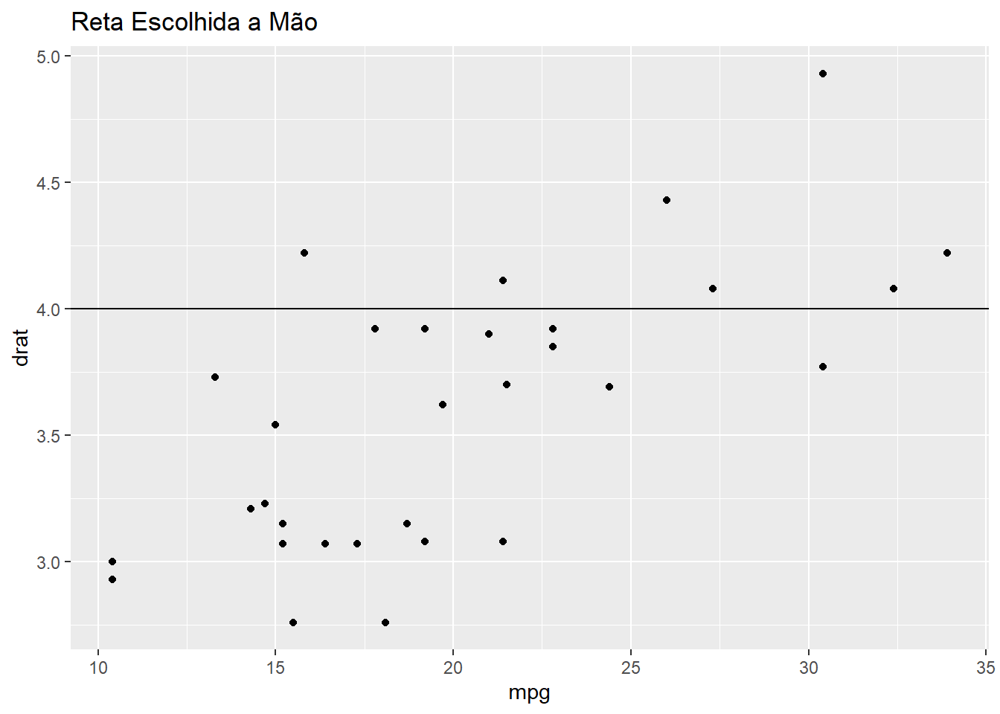
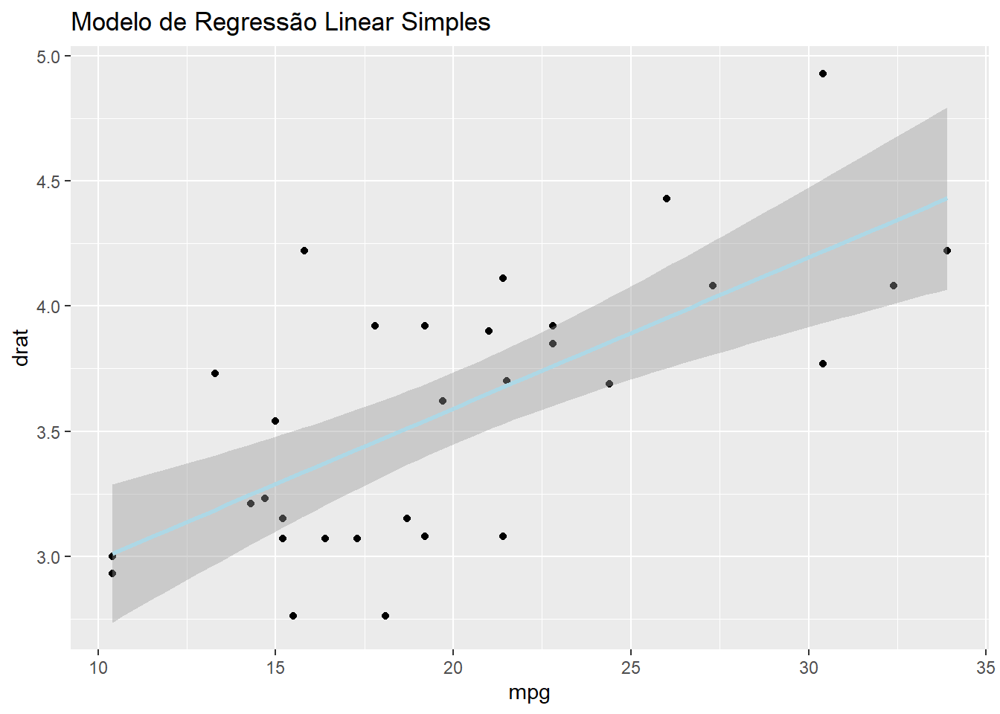

Poderíamos escolher uma reta a mão para tentar descrever a relação entre \(X\) e \(Y\)
library(ggplot2)
Warning: package 'ggplot2' was built under R version 4.1.2
p <-ggplot(data = mtcars, mapping =aes(x = mpg,y = drat))+geom_point()+labs(x="mpg", y="drat",title="Reta Escolhida a Mão")p +geom_hline(yintercept =4)

Porém, é possível ver que escolhendo a mão não temos certeza sobre a “eficiência” da reta. Para não lidarmos com esse problema, vamos utilizar o método da regressão linear simples
library(ggplot2)p <-ggplot(data = mtcars, mapping =aes(x = mpg,y = drat))+geom_point()+labs(x="mpg", y="drat",title="Reta Escolhida pelo Método de Regressão")p +geom_smooth(method ="lm", col ='lightblue')+labs(title="Modelo de Regressão Linear Simples")
`geom_smooth()` using formula 'y ~ x'

7.2 O que é esse método
Regressão linear simples é o método de escolha da melhor reta dentre todas as possíveis de serem escolhidas
\(y ≈ β_0+β_1x\)
O sinal ≈ pode ser entendido como “\(y\) é aproximadamente modelado como …”
7.3 No R
View(mtcars)melhor_reta<-lm(mpg ~ drat, data = mtcars)melhor_reta
Ou seja, precisamos encontrar o \(β_1\) e \(β_0\) que retornem o menor valor para RMSE.
Com \(β_1\) e \(β_0\) sendo
\(β_1 = \frac{∑(x_i−x)(y_i−y)}{∑(x_i-x)2}\)
\(β_0=y−β_1x\)
Esse \(β_0\) e \(β_1\) vieram de um método conhecido como Erro Quadrático Médio. E já que vieram do EQM, podemos chamar \(β_0\) e \(β_1\) de Estimadores do Mínimos Quadrados.